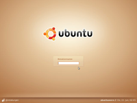
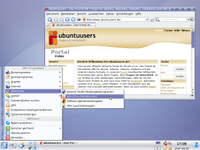

Feisty Fawn
Ubuntu 7.04 Feisty Fawn ist die auf Ubuntu 6.10 Edgy Eft folgende Ubuntu-Version und wurde am 19. April 2007 veröffentlicht. Sie sollte vor allem die Hardwareunterstützung verbessern, den Zugang zu Multimedia erleichtern, Desktop-Effekte ermöglichen und neue Desktoptechnologien integrieren. Als Nachfolger von Feisty erschien am 24. April 2007 Gutsy Gibbon.
Basisdaten¶
| Ubuntu 7.04 | |
| Basisdaten | |
| Codename: | Feisty Fawn |
| Deutsche Übersetzung: | Lebhaftes Rehkitz |
| Status: | nicht mehr unterstützt |
| Angekündigt am: | 18. Oktober 2006  |
| Erschienen am: | 19. April 2007  |
| Unterstützt bis: | 19. Oktober 2008 |
| Versionen: | Ubuntu, Edubuntu, Kubuntu, Xubuntu |
| Architekturen: | x86, PowerPC und AMD64 |
| Medien: | Alternate-CD, Desktop-CD und DVD |
| « Zeitleiste » | « Edgy Eft ... Feisty Fawn ... Gutsy Gibbon » |
Allgemeine Neuerungen¶
Während Ubuntu weiterentwickelt wird, steht die Entwicklung der einzelnen Programme auch nicht still. Viel Anwendungen liegen nun in einer neueren Version vor, man kann also teilweise mit neuen Funktionen, aber auch Fehlern rechnen.
Installation¶
Das grafische Installationsprogramm "Ubiquity" hat neben einer generellen Überarbeitung der Benutzeroberfläche viele Neuerungen erhalten: Vor der Installation werden die Versionshinweise (Release Notes) angezeigt und der erweiterte Partitionierer wurde überarbeitet. Außerdem soll dem Benutzer beim Wechsel von Windows oder von einer anderen Linux-Distribution geholfen werden, indem ihm angeboten wird, Benutzerzugänge und -daten zu importieren und einzurichten. Auch soll Ubiquity während der Installation die Vorfreude des Benutzers mit Bildern seines zukünftigen Systems vergrößern und nachträgliche Treiberaktualisierungen und eine automatisierte Installation ermöglichen.
Kernel¶
In Feisty wurde der neue Kernel 2.6.20 integriert. In dieser Version wurde hauptsächlich die Unterstützung für Virtualisierung verbessert.
Startprozess¶
Der Startprozess wurde in Feisty weiter verbessert. Neben Verbesserungen an Upstart, dem neuen ereignisgesteuerten Startsystem, wurde auch Usplash erweitert.
Einfache Aktivierung von 3D-Effekten¶
Die Einrichtung moderner 3D-Effekte mit Beryl/Compiz soll mit Feisty erleichtert werden. Wenn der Benutzer dafür binäre Grafiktreiber benötigt, soll er vor den Risiken, welche der Einsatz eines binären Treibers mit sich bringt, gewarnt werden.
Unbekannte Befehle¶
Man kennt es nur all zu gut. Man will ein Programm ausführen, aber der Befehl kann nicht ausgeführt werden, weil ein Paket noch nicht installiert ist.
mplayer bash: mplayer: command not found
Doch mit Feisty wird nun automatisch das Paket command-not-found installiert. Nun wird dem Benutzer gesagt, dass das Programm nicht installiert ist und über welche Pakete es nachinstalliert werden kann.
mplayer The program 'mplayer' can be found in the following packages: * mplayer-nogui * mplayer Try: sudo apt-get install <selected package> Make sure you have the 'multiverse' component enabled bash: mplayer: command not found
Natürlich werden falsch geschriebene Befehle nicht erkannt. Allerdings ist Benutzern sehr geholfen, die einer Anleitung folgen. So sehen sie schnell, dass sie das fehlende Programm problemlos aus der Paketverwaltung installieren können. Weitere Informationen zu command-not-found findet man hier im Wiki.
Festplatten¶
Festplatten werden nun generell über das SATA Protokoll angesprochen, egal über welche Schnittstelle sie angesprochen werden. D.h Festplatten erscheinen nun immer als "/dev/sdXY", also z.b. "/dev/sda1" und nicht mehr als "/dev/hda1" im Falle einer IDE-Festplatte. Das SATA-Protokoll soll leistungsfähiger sein und Benutzer sollen motiviert werden UUIDs als Festplattenbezeichnungen zu nutzen. Hier kann man Details zu dieser Änderung nachlesen.
Neuerungen in Ubuntu¶
Ubuntu Feisty Fawn kommt mit der aktuellen stabilen Version von GNOME 2.18.
Clearlooks¶
| Clearlooks ist die Standard-Theme Engine der GNOME Desktopumgebung. GTK Engines sind dafür zuständig Schaltflächen, Scrollbalken usw. auf dem Desktop zu zeichnen. Die nun in GNOME 2.18 enthaltene Version kann nun endlich individuell angepasst werden. Dadurch kann man sehr einfach den Desktop an die eigenen Bedürfnisse anpassen. Dazu muss als Thema "Clearlooks" gewählt werden. In den erweiterten Einstellungen findet man anschließend einen Reiter "Farben". |
Desktop Effekte¶
| Der Fenstermanager Compiz wird nun direkt bei der Installation von Ubuntu mitinstalliert. Über "System -> Einstellungen -> Desktop-Effekte" lässt sich Compiz mit nur wenigen Klicks aktivieren. Danach können verschiedene Optionen wie "wabbelnde" Fenster oder ein 3D-Würfel mit den Arbeitsflächen aktiviert werden. |
GNOME-Mount¶
| Dank dem Programm gnome-mount soll es in Feisty einfacher werden, mount-Optionen für einzelne Partitionen festzulegen und verschlüsselte Geräte zu verwalten. |
GNOME-Netzwerk-Manager¶
Damit man mit Feisty verschiedene Netzwerke problemlos dynamisch verwalten kann, wurde der Network-Manager verbessert und wird nun standardmäßig installiert. Er kann nun mit festen IPs umgehen und soll WLAN Netzwerke besser verwalten können.
Manager für proprietäre Kernelmodule¶
| Mit dem Paket restricted-manager gibt es unter "System -> Administration" einen Manager zum (De-)Aktivieren von proprietäre Kernelmodulen. Nach wie vor wird Ubuntu ohne proprietäre Treiber ausgeliefert, allerdings können Benutzer nun sehr einfach solche Treiber auf Wunsch nachinstallieren. |  |
Multimedia-Codecs¶
| Zusätzliche Codecs sind nun in Feisty sehr einfach zu installieren: Wenn man eine Audio- oder Videodatei abspielen möchte und der benötigte Codec fehlt, bietet Ubuntu automatisch an, diesen zu installieren. Dazu werden die zusätzlichen Paketquellen universe und multiverse standardmäßig aktiviert. Auch die Installation anderer proprietärer Programme will Feisty vereinfachen und so Skripte wie Automatix überflüssig machen. |
Screenshots¶
| Das Programm um unter GNOME Screenshots zu erstellen wurde erweitert. Unter "Anwendungen -> Zubehör -> Bildschirmfoto aufnehmen" findet man nun auch direkt das GNOME Screenshot Programm. Es bietet nun die Möglichkeit einen Screenshot erst nach einer Wartezeit zu erstellen und Effekte wie einen Schlagschatten hinzuzufügen. Dieses Programm ist übrigens innerhalb GNOME auch über die "Druck"-Taste ausführbar, ebenso wie das Programm KSnapshot unter Kubuntu. |
Spiele¶
| Mit GNOME 2.17 wurden zwei neue Spiele in Ubuntu aufgenommen: Ein Schach (glChess) und ein Sudoku-Spiel (gnome-sudoku). Sie sind im GNOME-Menü unter "Anwendungen -> Spiele -> Schach oder Sudoku" zu finden. |
Neuerungen in Kubuntu¶
Kubuntu kommt mit KDE 3.5.6, was neben einigen Neuerungen viele Fehler behebt.
GTK-QT¶
Bei der Installation von Kubuntu wird nun eine GTK-Engine mitinstalliert, die zum Anzeigen von GTK-Programmen Qt nutzt. Dadurch integrieren sich GTK-Anwendungen nahtlos in das Design des KDE-Desktops - GNOME Anwendungen unter KDE
Knetworkmanager¶
Knetworkmanager ist nun standardmäßig installiert, womit es leichter wird, mit einem Netzwerk Verbindung aufzunehmen.
Multimedia-Vereinfachung¶
Die Multimedia-Programme von Kubuntu wurden neu organisiert, so dass es für jede Aufgabe nur noch ein Programm gibt. Dies soll zu einer einfacheren Handhabung führen.
Einstellungen als Tabs¶
In den KDE Systemeinstellungen wurden die beiden Knöpfe für generelle und erweiterte Einstellungen durch Tabs ersetzt, womit die erweiterten Einstellungen leichter zu finden sind.
Ubiquity¶
Das grafische Installationsprogramm von Kubuntu, Ubiquity, wurde auf Qt4 portiert und ist somit bereit für das KDE derselben Version. Außerdem erhielt Ubiquity einige andere Verbesserungen.
Adept¶
Die Pakteverwaltung von Kubuntu, Adept, erhielt einige Verbesserungen: So kann sie nun bei der Installation neuer Programme Fragen stellen, wurde auf Qt4 portiert, kann auf eine neue Kubuntu-Version aktualisieren, kann die Software-Quellen ändern und zeigt bei Programmaktualisierungen die Änderungsliste (Changelog) an.
Logout¶
Feisty kommt mit einem neuen Logout-Dialog mit größeren Knöpfen. Außerdem wird der Bildschirm nun von oben nach unten verdunkelt.
Neuerungen in Xubuntu¶
Xubuntu enthält nun die stabile Version von Xfce 4.4, was viele Neuerungen zur Folge hat: Thunar als neuer Dateimanager, bessere Konfigurationsmöglichkeiten der Panels, bessere Unterstützung für Wechseldatenträger und Verbesserungen am Fenstermanager.
Screenshots¶
| Screenshots | |||||
| Ubuntu | Kubuntu | Xubuntu | Edubuntu | ubuntustudio | |
| Booten | |||||
| Login |  | ||||
| Splash |  | ||||
| GUI |  |  | |||
- Erstellt mit Inyoka
-
 2004 – 2017 ubuntuusers.de • Einige Rechte vorbehalten
2004 – 2017 ubuntuusers.de • Einige Rechte vorbehalten
Lizenz • Kontakt • Datenschutz • Impressum • Serverstatus -
Serverhousing gespendet von